import numpy as np
import matplotlib.pyplot as plt
import scipy.stats as statsLecture 1 - Monte Carlo
Introduction
Example 1.2: simple binomial test
num_simulation = 1000
num_tosses = 6
obs_num_heads = 1
all_results = np.zeros(num_simulation)
for cur_sim in range(num_simulation):
cur_tosses = np.zeros(num_tosses)
for i in range(num_tosses):
cur_tosses[i] = np.random.choice([0, 1])
all_results[cur_sim] = np.sum(cur_tosses)
sim_pval = np.sum(all_results <= obs_num_heads) / num_simulation
print(f"Simulated p-value: {sim_pval}")Simulated p-value: 0.106Plotting the distribution of the test statistic under the null
bins = np.arange(all_results.min(), all_results.max() + 2) - 0.5
plt.hist(all_results, rwidth=.7, bins=bins);
plt.axvline(obs_num_heads, color='red');
plt.show()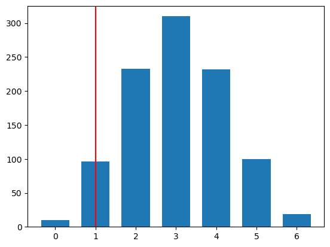
Permutation tests
Example 1.3: A/B Testing
Also known as two sample testing.
Consider an A/B test where each user outcome is binary (click = 1, no click = 0). We want to test whether the click-through rates differ between the two groups:
H_0: p_A = p_B \quad \text{vs.} \quad H_1: p_A\neq p_B
A permutation test constructs a null distribution by repeatedly shuffling the A/B labels.
Under the null hypothesis, the labels do not carry information about CTR; that is, the outcomes are exchangeable across groups. Therefore, conditional on the observed outcomes, every reassignment of the A/B labels (keeping the group sizes fixed) is equally likely.
To test H_0:
- Compute a test-statistic from observed data (e.g. T^{obs} = |\widehat{p}_A - \widehat{p}_B|)
- Randomly shuffle the A/B labels many times and recompute test statistic each time
- Compare T^{obs} to the permutation distribution to obtain a p-value:
p\text{-val} = \frac{1}{S}\sum_{s=1}^S \mathbb{I}(T^{(s)} \geq T^{obs})
n_sim = 1000
my_viewsA = 98
my_viewsB = 162
all_views = my_viewsA + my_viewsB
n_impsA = 1000
n_impsB = 2000
all_imps = n_impsA + n_impsB
obs_T = abs(my_viewsA / n_impsA - my_viewsB / n_impsB)
null_Ts = np.zeros(n_sim) ## what we called "all_results" from before
for cur_sim in range(n_sim):
pool = np.array([1] * all_views + [0] * (all_imps - all_views))
impsA = np.random.choice(pool, n_impsA, replace=False)
viewsA = np.sum(impsA)
viewsB = all_views - viewsA
diff = viewsA / n_impsA - viewsB / n_impsB
null_Ts[cur_sim] = diff
sim_pval = np.sum(np.abs(null_Ts) >= np.abs(obs_T)) / n_sim
print(f"Simulated p-value: {sim_pval}")
plt.hist(null_Ts, bins=12)
plt.axvline(abs(obs_T), color='red')
plt.show()Simulated p-value: 0.137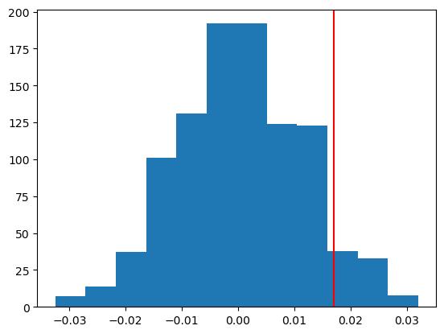
Example 1.4: independence test for contingency tables
We have paired data (X_1,Y_1), \dots, (X_n, Y_n).
We can use permutations to test:
H_0: X \text{ independent of } Y \quad \text{vs.}\quad H_1: X \text{ not independent of } Y
Under the null, shuffling which values are paired does not change the distribution (because X and Y are independent).
That is, under the null, (X_4, Y_1), (X_{32}, Y_2), ... (X_5, Y_n) has the same distribution as the original data.
K1 = 3
K2 = 2
con_table = [[350, 1200, 450],
[20, 120, 60]]
con_table = np.array(con_table)
column_sums = np.sum(con_table, axis=0)
row_sums = np.sum(con_table, axis=1)## compute chi-squared test statistic
E = np.zeros((K2, K1))
for i in range(K2):
for j in range(K1):
E[i, j] = row_sums[i] * column_sums[j] / np.sum(con_table)
obs_T = np.sum((con_table - E)**2 / E)
n = int(np.sum(con_table))## convert contingency table to data pairs
data_pairs = []
for i in range(K2):
for j in range(K1):
for _ in range(int(con_table[i, j])):
data_pairs.append([i, j])
data_pairs = np.array(data_pairs)n_sim = 1000
all_null_Ts = np.zeros(n_sim)
for cur_sim in range(n_sim):
## permute the first column of data_pairs
cur_sim_data = np.column_stack((np.random.choice(data_pairs[:, 0], n, replace=False), data_pairs[:, 1]))
## convert cur_sim_data to contingency table
cur_sim_con_table = np.zeros((K2, K1))
for i in range(n):
cur_sim_con_table[cur_sim_data[i, 0], cur_sim_data[i, 1]] += 1
null_T = np.sum((cur_sim_con_table - E)**2 / E)
all_null_Ts[cur_sim] = null_T
print(cur_sim_con_table)
## compute p-value
p_value = np.mean(all_null_Ts >= obs_T)
print(f"Simulated p-value using test statistic 1 = {p_value}")
plt.hist(all_null_Ts, bins=12);
plt.axvline(obs_T, color='red');[[ 332. 1205. 463.]
[ 38. 115. 47.]]
Simulated p-value using test statistic 1 = 0.011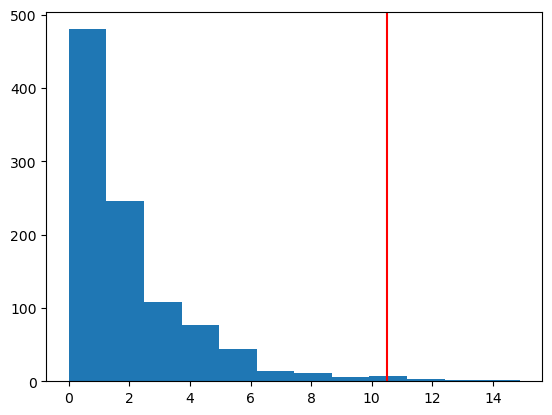
## Use traditional pearson chi-squared test
from scipy.stats import chi2_contingency
chi2, p, dof, expected = chi2_contingency(con_table)
print(f"CLT-based p-value = {p:.4f}")CLT-based p-value = 0.0053Example 1.5: independence test for continuous data
# Creating the X matrix
X = np.array([[2.5, 2.7], [4, 4.0], [5, 3.2], [1, 2.7], [3, 3.2], [2, 2.4], [1.5, 2.1]])
## plot variable X[, 0] vs X[, 1]
plt.scatter(X[:, 0], X[:, 1])
plt.xlabel("X1")
plt.ylabel("X2")
np.corrcoef(X[:, 0], X[:, 1])[0, 1]np.float64(0.7350457786848433)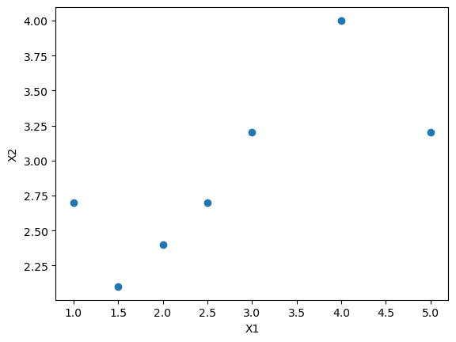
n = X.shape[0]
# Calculating the correlation of the original data
obs_T = np.corrcoef(X[:, 0], X[:, 1])[0, 1]
n_sim = 1000
null_Ts = np.zeros(n_sim)
for cur_sim in range(n_sim):
# Shuffling only the first column of X
Xprime = np.column_stack((np.random.choice(X[:, 0], n, replace=False), X[:, 1]))
null_Ts[cur_sim] = np.corrcoef(Xprime[:, 0], Xprime[:, 1])[0, 1]
# Calculating the proportion of simulations where the absolute correlation is greater than my_corr
sim_pval = np.sum(np.abs(null_Ts) >= obs_T) / n_sim
print(f"Simulated p-value: {sim_pval}")
plt.hist(null_Ts, bins=12)
plt.axvline(obs_T, color='red')
plt.show()Simulated p-value: 0.046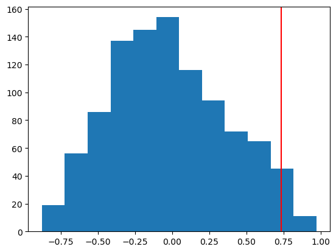
Example 1.6: independence test using Spearman’s rho
x = np.arange(1, 20)
y = np.arange(1, 20)
y[-1] = -50
n = len(x)
plt.figure(figsize=(5,4))
plt.scatter(x, y);
plt.xlabel('x');
plt.ylabel('y');
# correlation of original data
obs_corr = np.corrcoef(x, y)[0,1]
# spearman rho
rank_x = stats.rankdata(x)
rank_y = stats.rankdata(y)
obs_spearman = np.corrcoef(rank_x, rank_y)[0,1]
n_sim = 1000
null_corr = np.zeros(n_sim)
null_spearman = np.zeros(n_sim)
for cur_sim in range(n_sim):
x_shuffle = np.random.choice(x, n, replace=False)
null_corr[cur_sim] = np.corrcoef(x_shuffle, y)[0, 1]
rank_x = stats.rankdata(x_shuffle)
null_spearman[cur_sim] = np.corrcoef(rank_x, rank_y)[0, 1]
# Calculating the proportion of simulations where the absolute correlation is greater than obs_corr
corr_pval = np.sum(np.abs(null_corr) >= obs_corr) / n_sim
print(f"Simulated correlation p-value: {corr_pval}")
spearman_pval = np.sum(np.abs(null_spearman) >= obs_spearman) / n_sim
print(f"Simulated spearman's p-value: {spearman_pval}")
fig, (ax1, ax2) = plt.subplots(1, 2, figsize=(10, 4))
ax1.hist(null_corr, bins=12)
ax1.axvline(obs_corr, color='red')
ax1.set_title('Independence test with correlation')
ax2.hist(null_spearman, bins=12)
ax2.axvline(obs_spearman, color='red')
ax2.set_title('Independence test with Spearmans rho')
plt.show()Simulated correlation p-value: 1.0
Simulated spearman's p-value: 0.0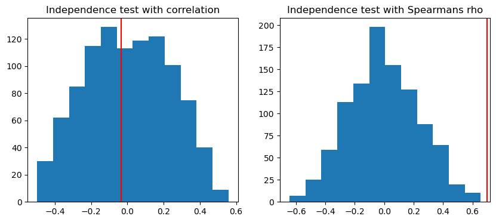
Estimating sampling distributions
Goal: Given a sample X_1,\dots, X_n\sim p(x|\theta), what is the standard error for an estimator \widehat{\theta} of \theta?
- For example, the sample mean \bar{X} is an estimator for the population mean \mu. The Central Limit Theorem tells us that \bar{X} \sim N(\mu, \sigma^2/n), where \sigma^2 is the population variance.
Monte Carlo: use repeated sampling from p(x|\theta)
Example: obtain sampling distribution of the median of the exponential distribution
- Draw S samples, each of size n, from the exponential distribution
- For each sample, calculate the median \widehat{\theta}^{(s)} = \text{median}(X_1^{(s)}, \dots, X_n^{(s)})
- Now you have an approximate distribution based on (\widehat{\theta}^{(1)},\dots, \widehat{\theta}^{(S)})

The Bootstrap
Problem: If we do not know p(x|\theta), we cannot repeatedly sample from the population
The bootstrap (Efron, 1979) refers to a simulation-based approach to understand the accuracy of statistical estimates.
- Instead of sampling from p(x|\theta), the bootstrap involves sampling from an observed sample x_1,\dots, x_n, with replacement
- That is, the bootstrap approximates p(x|\theta) with the empirical distribution of x_1,\dots, x_n.

Example 1.7: confidence interval for the median
Here is a sample X_1,\dots, X_n from the exponential distribution.
# draw sample
np.random.seed(42)
n = 30
x = np.random.exponential(scale=1, size=n)
# calculate sample estimate
med_hat = np.median(x)
# get population distribution for plotting
x_vals = np.linspace(0, 10, 100)
pdf_vals = scipy.stats.expon.pdf(x_vals)
plt.figure(figsize=(4,3))
plt.plot(x_vals, pdf_vals, 'r', label='Population');
plt.hist(x, density=True, label='Sample', bins=20);
plt.title('Exponential Distribution');
plt.legend();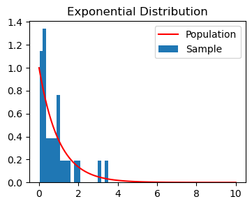
print(f"Estimated: {med_hat:.3f}")We use the bootstrap to obtain bootstrap samples, and calculate the median of each of the samples.
n_boot = 1000
boot_med_hats = np.zeros(n_boot)
for cur_boot in range(n_boot):
xboot = np.random.choice(x, n, replace=True)
boot_med_hats[cur_boot] = np.median(xboot)plt.figure(figsize=(4,3))
bins_medians = np.linspace(min(boot_med_hats), max(boot_med_hats), 15)
plt.hist(boot_med_hats, bins=bins_medians,density=True, color='grey', alpha=0.7);
plt.title('Bootstrap Sample Medians');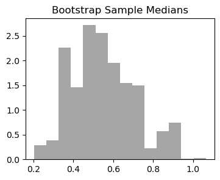
We show two ways to compute a confidence interval for the sample median, \widehat{m}
- Normal approximation using standard deviation of bootstrap medians
[\widehat{m} - z_{1-\alpha/2} sd(\widehat{m}), \widehat{m} + z_{1-\alpha/2} sd(\widehat{m})]
where z_{1-\alpha/2} is the 1-\alpha/2 quantile of the Gaussian distribution.
z_alpha = stats.norm.ppf(0.975) # z_{1-alpha/2} for alpha=0.05
lower_quantile = med_hat - z_alpha * np.std(boot_med_hats)
upper_quantile = med_hat + z_alpha * np.std(boot_med_hats)print(f"Bootstrap normal confidence interval: ({lower_quantile:.3f}, {upper_quantile:.3f})")Bootstrap normal confidence interval: (0.198, 0.837)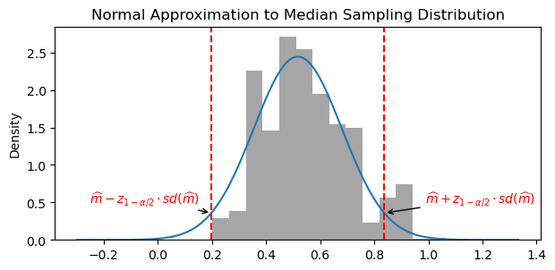
- Quantiles of bootstrap medians
[\widehat{Q}_{\alpha/2}, \widehat{Q}_{1-\alpha/2}]
where \widehat{Q}_{\alpha/2} is the \alpha/2 sample quantile of the bootstrap medians.
q025 = np.quantile(boot_med_hats, 0.025)
q975 = np.quantile(boot_med_hats, 0.975)
print(f"Bootstrap quantile confidence interval: ({q025:.3f}, {q975:.3f})")Bootstrap quantile confidence interval: (0.291, 0.905)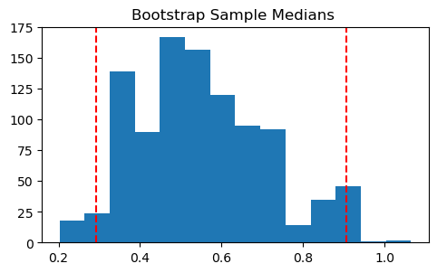
Example 1.8: verifying the validity of bootstrap confidence intervals
We show the bootstrap confidence intervals have almost (1-\alpha)/% coverage.
We draw a sample from the Poisson(\lambda) distribution with \lambda=1. The population mean is 1.
We draw bootstrap samples and calculate a confidence interval for the mean using the normal approximation
We then record how many intervals contain the population mean
n_sim = 500
successes = np.zeros(n_sim)
z_alpha = stats.norm.ppf(0.975) # z_{1-alpha/2} for alpha=0.05
lower_bounds = []
upper_bounds = []
for cur_sim in range(n_sim):
n = 50
x = np.random.poisson(lam=1, size=n) # Poisson distribution with lambda=1
mu = 1
muhat = np.mean(x)
n_boot = 500
boot_muhats = np.zeros(n_boot)
for cur_boot in range(n_boot):
xboot = np.random.choice(x, n, replace=True)
boot_muhats[cur_boot] = np.mean(xboot)
boot_std = np.std(boot_muhats)
boot_ci = [muhat - z_alpha * boot_std, muhat + z_alpha * boot_std]
lower_bounds.append(muhat - z_alpha * boot_std)
upper_bounds.append(muhat + z_alpha * boot_std)
if boot_ci[0] <= mu <= boot_ci[1]:
successes[cur_sim] = 1
percent_success = np.sum(successes) / n_sim
print(f"Percent of experiments where the confidence interval contains the true mean: {percent_success}")
# Plot the confidence intervals
fig, ax = plt.subplots(figsize=(10, 6))
for i in range(n_sim):
color = 'blue' if successes[i] else 'red'
ax.hlines(i, lower_bounds[i], upper_bounds[i], colors=color, linewidth=0.5)
ax.axvline(mu, color='black', linestyle='--', label='True mean')
ax.set_xlabel('Mean value')
ax.set_ylabel('Simulation index')
ax.set_title('Bootstrap Confidence Intervals')
ax.legend()
plt.show()Percent of experiments where the confidence interval contains the true mean: 0.92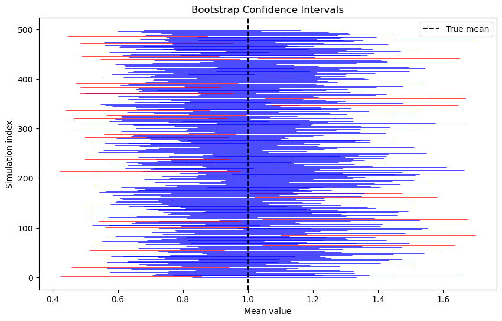
Example 1.9 and 1.10: bootstrap tests for the mean
X = np.array([0.2, -1.9, 1.4, -2.7, -1.7, -1.4, 0.3, 1.2, -1.1, -0.2, -2.1])
n = len(X)
n_boot = 1000
print(f"mean of X: {np.mean(X):.3f} with n={n}")
obs_T = abs(np.mean(X))
Xc = X - np.mean(X)
boot_Ts = np.zeros(n_boot)
for cur_boot in range(n_boot):
Xboot = np.random.choice(Xc, n, replace=True)
boot_Ts[cur_boot] = abs(np.mean(Xboot))
boot_pval = sum(boot_Ts >= obs_T)/n_boot
print(f"bootstrap p-value: {boot_pval}")
plt.hist(boot_Ts, bins=12)
plt.axvline(np.abs(obs_T), color='red', linestyle='dashed')
plt.show()mean of X: -0.727 with n=11
bootstrap p-value: 0.078
X = np.array([-1, 3, 5, 1, 10, 2, 9, 6, 6, 2, 4])
Y = np.array([11, -2, 1, 0, 0, 5, 2])
n = len(X)
m = len(Y)
n_boot = 1000
Xc = X - np.mean(X)
Yc = Y - np.mean(Y)
print(f"mean of X: {np.mean(X):.3f}, mean of Y: {np.mean(Y):.3f}")
obs_T = np.mean(X) - np.mean(Y)
boot_Ts = np.zeros(n_boot)
for cur_boot in range(n_boot):
Xboot = np.random.choice(Xc, n, replace=True)
Yboot = np.random.choice(Yc, m, replace=True)
boot_Ts[cur_boot] = np.mean(Xboot) - np.mean(Yboot)
boot_pval = sum(np.abs(boot_Ts) >= np.abs(obs_T))/n_boot
print(f"bootstrap p-value: {boot_pval}")
plt.hist(boot_Ts, bins=12)
plt.axvline(np.abs(obs_T), linestyle='dashed', color='red')
plt.axvline(-np.abs(obs_T), linestyle='dashed', color='red')
plt.show()mean of X: 4.273, mean of Y: 2.429
bootstrap p-value: 0.324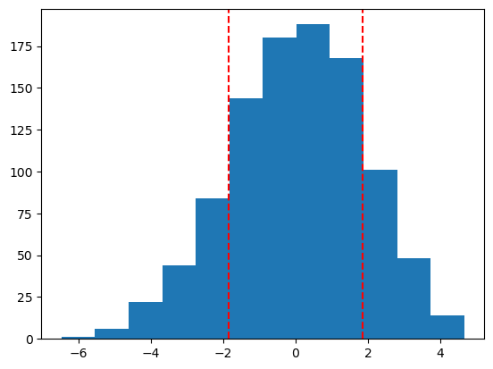